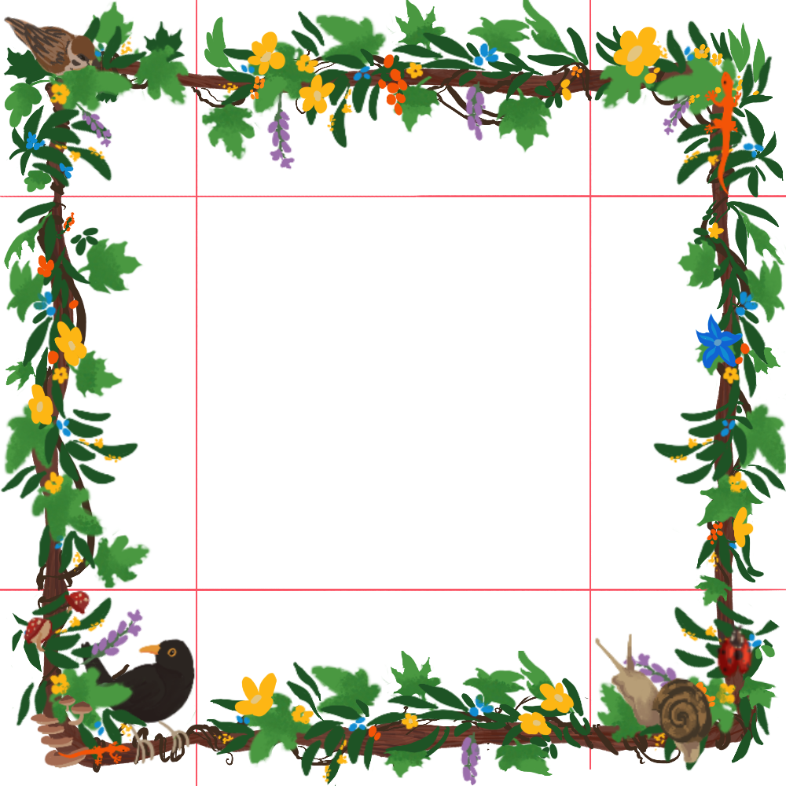
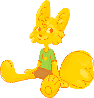
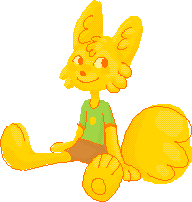

I know the issue of stealing other people's code is a debated topic in the community -
especially on Neocities, where a lot of less savvy people
are trying to set up their first website.
With that said: I don't care! I want you to steal my shit! :D
License
You probably already noticed how in the footer at the end of each page there's this
little button:

This here specifies the "license" this website and its contents are released under.
In short, it specifies what you can or cannot legally do with the stuff I made myself.
This one is pretty straightforward!
You can copy, modify, and share anything of my creation
that I host on this website! Be it html, art, words.
The caveat is: you can use it for noncommercial purposes only (you cannot make money out of it),
you should credit me (a link back somewhere on your site/on the art is all I need! No need to credit me if you just grab some html or take inspiration), and
if you modify my stuff, you must re-share what you create under the same license!
So basically: go nuts, don't make money out of it, keep it free for other people.
Also, if you create something from anything I made, I would be delighted to see it! No obligation though.
Another thing I politerly ask for, is to please don't use my characters as your own.
Putting my art of them on your site would be a honour and you're free to have them hanging around!
Just please, don't go around using them as your avatars or sonas. Thank you!
Back to top
Leafy Border
The image I use as a border for my main divs is a 1000x1000px image.
It's larger than it has any rights to be, and I resize it via CSS.
This is the CSS I use, that works for me personally:
.greenbox {
border: 5px solid transparent;
border-image-source: url(navborder250.png);
border-image-slice: 250;
border-image-width: 10;
border-image-outset: 4 3 2 3;
border-image-repeat: round;
background-color: rgb(203, 234, 157);
}
❧ The
'border' attributes creates an actual, solid border to place our image on top of
- but since it's transparent, you won't even see it! It occupies actual volume, and for my
purposes I kept it quite thin (5px).
❧
'border-image-source' fetches the actual image to use on the border!
❧
'border-image-slice' decides at which point the image needs to be "sliced"
into separate sections, for the corners and the sides. In my case, I opted to divide
my 1000px square image in such a way to have borders be half the lenght of the "inner" border.

So, I divided my 1000px side by 4: 250px.
My CSS will try to slice my side one time for each 250px. The first and last chunks will be used
for the corners and will not repeat; the chunks that are in the middle will be the actual border.
In the image above, I have tried to mark the slices that were relevant for me to work with.
❧
border-image-width controls the actual width of your image. I kept it very small at
10, as I like the look. But you can have it be much bigger:
Like this!
❧
border-image-outset controls how much the image can extend outside of the
actual div they're a border of. The order goes clockwise: top, right, bottom, left. Just play with it until it feels right imo!
❧
border-image-repeat controls if the border should stretch, repeat, rescale, etc.
You can see what other values this attribute can have
here.
That is also a much better guide than this little section here!
Back to top
DHTML
You're absolutely free to look at my code, and take pieces of it, or
even just use it as a base to make your own website.
I did my best to keep my html readable and annotated, for my sake and yours both.
There might be some places where I use really bad practice though, or that are confusing.
I'm still a total newb at this!
You can see the source code of each of my pages through "View Page Source", but here I'll be
linking the main stuff anyways.
☀ styles.css page. An external CSS page -
it has the main CSS that is being loaded in most of the site!
☀ Index page. Has some extra stuff on the lower half that
other pages don't have!
☀ About-me page.
Has a cute character box and styling for the playlist.
Javascript disclaimer: the little JS I have so far was written by a language model.
I'm still starting to study JS but was eager to get a few things to be functional here.
So, none of the Javascript was written by me - but I do not think it infringes on anyone's rights, either. Here's my full thoughts on the matter.
Putting this out there in case you have ethical qualms about using this code!
☀ load.js:
code that allows for the header, sidebars, and footer to be loaded dynamically on
each page (so I don't have to change each of them manually on each page when I want
to update something on them!)
To use this, you just need to set a <div> to have a certain ID, and tell the JS what
html page corresponds to that ID. In my case, 'header.html' corresponds to id="header".
When I put a "<div id="header">" in my page's body, it will automatically
load the contents of "header.html" there.
☀ language.js:
the JS code that handles the little language switching button in the top right.
It's absurdly simple: the text for both the italian and english is already in the html.
However, they're in separate divs with different classes (.eng and .ita). The language that
is not displayed by default, however, also has another class: '.hidden'.
The CSS for that class has a 'display:none' attribute, which makes it invisible.
Now - the little button on my header is like this:
<button onclick="toggleLanguage()"></button>
Which means - when it's pressed, it triggers the "toggleLanguage" function.
All that function does, then, is take the '.hidden' class and switch it around: if previously
object with the '.ita' class also had an '.hidden' class, now it's the '.eng' objects that
are hidden! So it looks like text is getting replaced - in truth, I am just showing you two
entirely different divs.
☀ music.js:
this code handles the playlists (like the one in the about-me page). It only uses native HTML & CSS
elements, but creates a functional playlist that can play songs in order. There are annotations inside
for the explanations the LLM gave me on how the different parts of the code works. But it's really
tricky for me! I hope to be able to learn how to create stuff like this myself sooner or later.
Back to top
 
